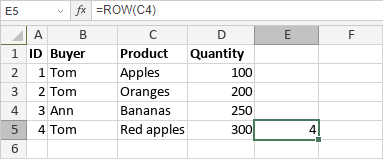

ROW funkcija
ROW funkcija je jedna od funkcija za pretraživanje i reference. Koristi se za vraćanje broja reda određenog ćelijskog upućivanja.
Sintaksa
ROW([reference])
ROW funkcija ima sledeći argument:
| Argument | Opis |
|---|---|
| reference | Reference na ćeliju. |
Napomene
reference je opcioni argument. Ako se izostavi, funkcija vraća broj reda ćelije u kojoj je unesena ROW funkcija.
Napomena: ovo je niz formula. Za više informacija pročitajte članak o unosu niz formula.
Kako primeniti ROW funkciju.
Primeri
Slika ispod prikazuje rezultat koji vraća ROW funkcija.
